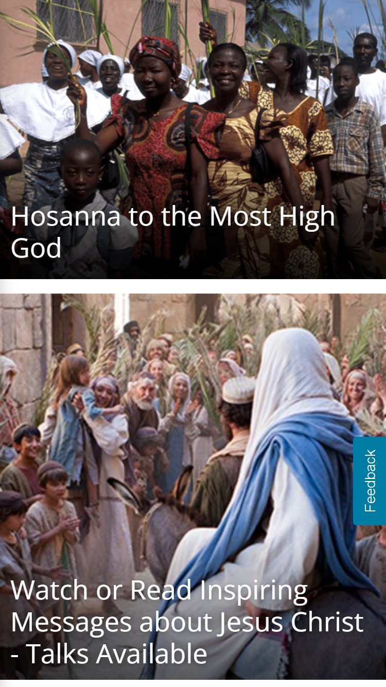
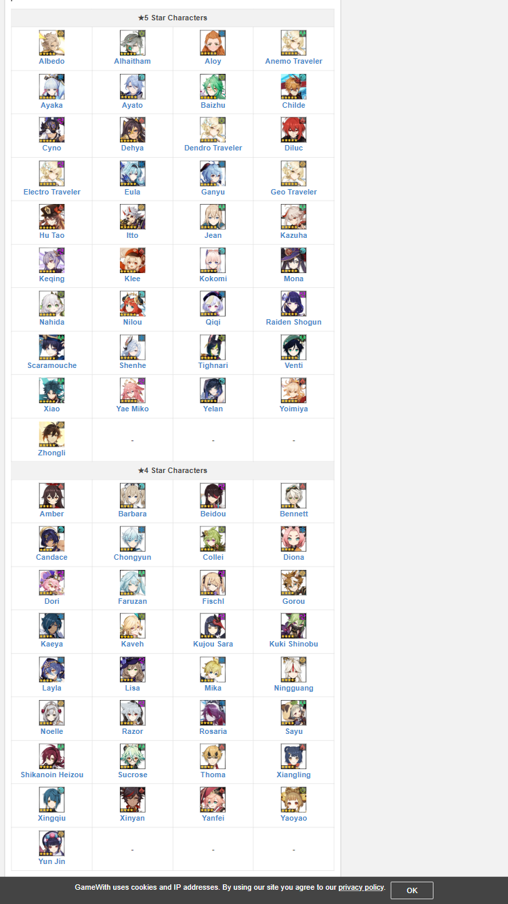

White Space and Clean Design
BYU-Pathway - Degree List
byupathway.comSpacing between the various elements is considerable, providing a non-saturated view and helping the user to differentiate the many sections on the site.
Repetition
Latter-day Saints Website
lds.org

Multiple elements share the same format on the site, creating a sense of cohesion and unity.
Alignment
Genshin Impact Character Guide
gamewith.net

Even though the site is not the best at being responsive, it does a great job aligning all objects and creating a sense of order by putting them in rows and columns that follow the same pattern and limitations.